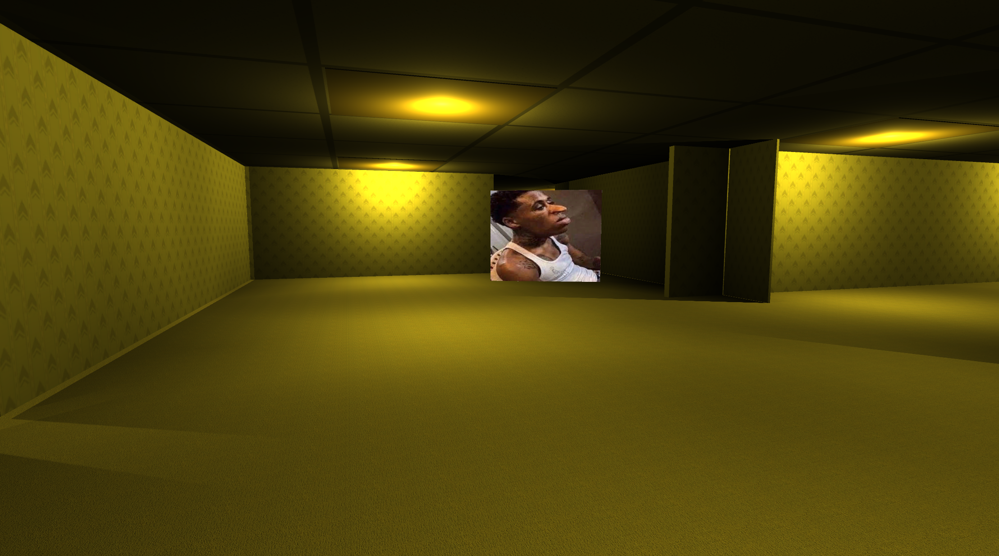

Collect The Dales (Sep - Dec 2022)

Before starting my first main project inside the Unity Engine, I decided to learn some techniques for myself while making a game for fun on the side. At the start I made a simple chase game where the player is constantly being chased by a png object in a small map while the player tries to collect images. I made the first version of the game over 1 night and progressively updated it every time I thought of something I could add to it like melee combat or controller support.
Key Aspects
Chasing
The enemy constantly chases the player from the very start. It was inspired by the NextBots from Garry's Mod that were popular at that time by being just a photo with an audio playing when close to the player. It starts off moving slow and progressively gets faster as the player collects more "Dales".
Collectibles
A very simple mechanic but a very useful one is a collectible item. It works as the player collides with it and it disappears while adding to the player's score.
Melee Combat
One of my modelling tasks for this course was to make a detailed weapon and so my model was a sword. I originally had no plans to use it for a game but thought it would be a good idea to prototype some melee combat. The sword can be picked up after it is summoned by lighting the Tim Shrine and the player can swing it allowing for an animation to play. A hitbox will be made and if the enemy is inside it, it will disappear and spawn somewhere random inside the map.
Download
Find the all versions on my itch.io page. The 0.5 version doesn't support keyboard+mouse as I changed the design to port the game to my Steam Deck (it was also a success).